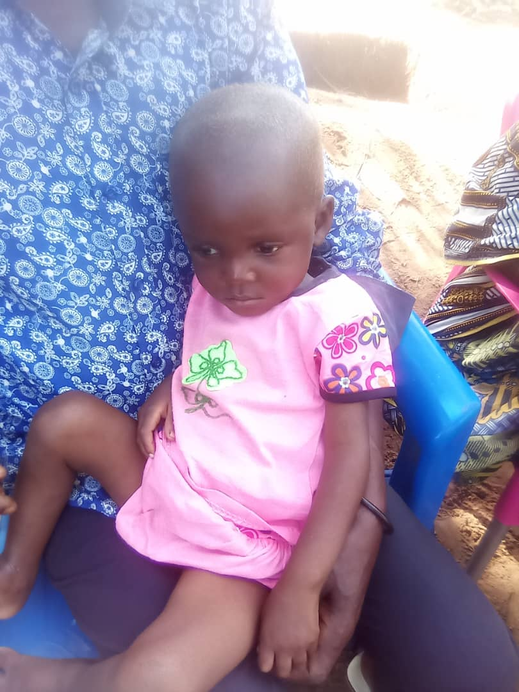

Nos Activités Récentes
Activité de dépistage actif des orphelins et enfants vulnérables malnutris
Date: 17 mars 2025
Description: Dans cette activité, des équipes médicales ont mené un dépistage actif de la malnutrition chez les orphelins et enfants vulnérables dans différentes zones ciblées, en vue de fournir des interventions nutritionnelles adaptées.
Activités humanitaires d'entraide sociales aux enfants vulnérables et orphelins souffrant de malnutrition aiguë
Date: 25 février 2025
Description: Cette initiative visait à fournir un soutien social et médical aux enfants souffrant de malnutrition aiguë, en leur offrant des soins, de la nourriture et des programmes de soutien psychologique.
Activités de distribution des produits alimentaires pour les déplacés de Kwamouth
Date: 20 décembre 2024
Description: Cette activité a consisté en la distribution de produits alimentaires essentiels aux populations déplacées de Kwamouth, afin de répondre à leurs besoins immédiats en matière de nutrition et de survie.

Activités de supervision des pools Humanitaires Ciblés dans le cadre de l'assistance humanitaire des orphelins et enfants vulnérables
Date: 17 décembre 2024
Description: Cette activité a impliqué la supervision de plusieurs pools humanitaires dans le but d'assurer une assistance ciblée aux orphelins et enfants vulnérables, en fournissant des ressources vitales pour leur bien-être et développement.